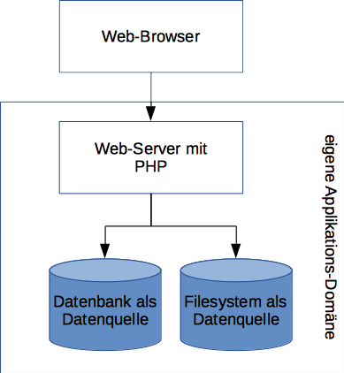
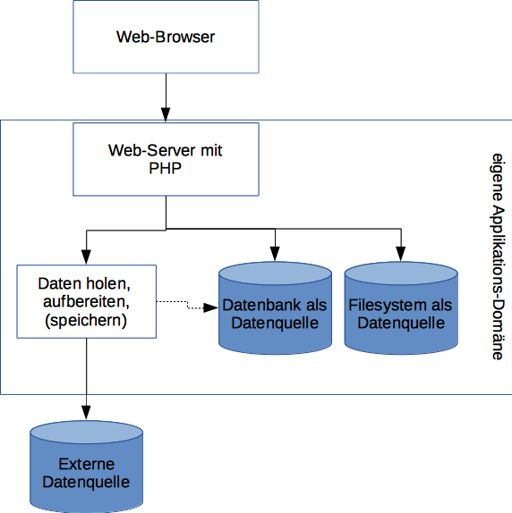
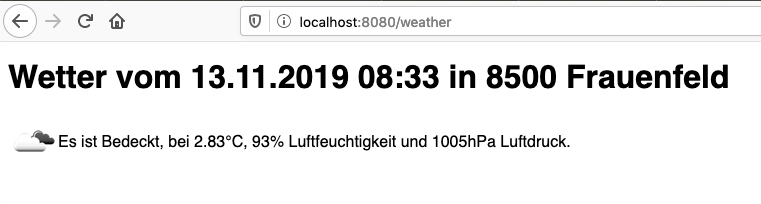
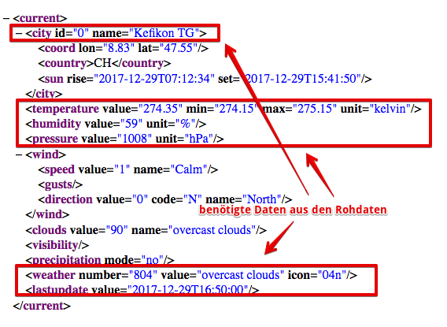

{% extends "../_base_template.html" %} {% block title %}Lektion 14 - externe
Datenquellen {% endblock %} {% block sections %}
<section data-markdown>
  <textarea data-template>
<i class="fas fa-graduation-cap"></i>externe Datenquellen
=============================

Heutiges Ziel
--------------

* Sie können externe Dienste als Datenquelle nutzen
* Sie kennen 2 gängige Datenformate (XML, JSON) von maschinenlesbaren Diensten
* Sie kennen die Möglichkeiten von PHP, JSON- und XML-Daten von externen Diensten anzuziehen

</textarea
  >
</section>

<section data-markdown>
  <textarea data-template>
<i class="fas fa-graduation-cap"></i>externe Datenquellen
=============================

**Externe Dienste als Datenquelle**

Die Standard-Architektur unserer Web-Applikation sah bisher so aus:



* Unsere Daten kamen aus der eigenen Applikationsdomäne:
  * entweder als relationale Daten / Modelle aus einer Datenbank
  * oder als Dateien vom lokalen Fileystem.
* Es stehen aber nicht immer alle Daten Applikations-lokal zur Verfügung:
    Daten können aus externen Quellen in die Applikation integriert werden.<br />
    <i class="far fa-hand-point-right"></i> Der Trend geht heute vermehr in Richtung **Micro Services** - also viele kleine Dienste,
die nicht lokal, sondern z.B. als Web-Schnittstelle eingebundne werden.
* Externe Daten können auf ganz unterschiedliche Arten zur Verfügung gestellt werden:
  * Via (Web-) API, Schnittstelle
  * als externe Datenbank
  * als zusätzliche Dateien
  * … und viele weitere Möglichkeiten
* Es gilt, eine Schnittstelle zu bauen, welche die Daten Applikations-Lokal verfügbar macht.


</textarea>
</section>

<section data-markdown>
<textarea data-template>
<i class="fas fa-graduation-cap"></i> M151 - externe Datenquellen
=============================

**Problematik von externen Datenquellen**

Im Gegensatz zu lokal vorhandenen Daten (aus einer Datenbank, aus Files)
gibt es bei externen Datenquellen einiges mehr zu beachten, wenn Sie
diese nutzen / den Usern zur Verfügung stellen wollen.

Welche **technischen und organisatorische Probleme / Herausforderungen** sehen Sie, wenn Sie Daten aus einer
externen Quelle anbinden / zur Verfügung stellen wollen?

https://padlet.com/alex_schenkel/m151_externe_daten <!-- .element: class="enlarge" -->
</textarea>
</section>

<section data-markdown>
<textarea data-template>
<i class="fas fa-graduation-cap"></i> M151 - externe Datenquellen
=============================
* Externe Daten kommen meist in einer nicht kompatiblen Datenstruktur.
  Die Daten müssen **aufbereitet** oder **konvertiert** werden, um in Ihr Datenmodell zu passen.

* Externe Datenquellen abzufragen **benötigt Zeit**, sicher mehr Zeit, als ein lokaler Datenbank-
  oder File-Zugriff. Ein **lokales Caching** (Zwischenspeichern) ist ev. notwendig.

* Externe Daten stehen ev. nicht oder **nur kurze Zeit zur Verfügung** (Beispiel: aktuelle Messwerte).
  Wenn Sie die Daten längere Zeit oder für Aggregationen / Statistiken verwenden wollen,
  müssen Sie diese **(zwischen-)speichern**.

* Eventuell müssen Sie **rechtliche Vorgaben zur Abfrage resp. Speicherung der Daten beachten**
  (Abfragelimiten, Datenspeicherung, Quellenreferenzen ...).

* Je nach API / Quelle benötigen Sie eine **Authentifikation**, um die Daten
  abrufen zu können.
</textarea>
</section>
</section>

  <section data-markdown>
    <textarea data-template>
<i class="fas fa-graduation-cap"></i> M151 - externe Datenquellen
=============================

**Problematik von externen Datenquellen**

Sie müssen somit beim Einbinden externer Daten entscheiden:

* **WIE** hole ich die Daten? (Web-Dienst, API, ……)
* **WANN** hole ich die Daten? (on request, in einem bestimmten Interval)
* **WIE** muss ich die Daten **AUFBEREITEN**?
* Muss ich die Daten **SPEICHERN**?


</textarea>
</section>
<section data-markdown>
<textarea data-template>
<i class="fas fa-graduation-cap"></i> M151 - externe Datenquellen
=============================

**Umsetzung am Beispiel openweathermap.org (Wetterdaten)**

**Ziel**: Wir wollen auf unserer Webseite das aktuelle Wetter einblenden.
Dazu verwenden wir die Daten von https://openweathermap.org/.

Wir wollen folgende Daten anzeigen:

* Aktuelles Wetter (Text-Beschreibung)
* Aktuelle Temperatur, Luftdruck und Feuchtigkeit
* ein Bildchen des Wetters



</textarea>
</section>

<section data-markdown>
<textarea data-template>
<i class="fas fa-graduation-cap"></i> M151 - externe Datenquellen
=============================
**WIE holen wir die Daten?**

Wir benutzen die „Current Weather Data for one location“-Schnittstelle von openweathermap:

openweathermap bietet sowohl eine **JSON**- wie auch eine **XML**-Schnittstelle via Web (HTTP) an.
Beide Varianten benötigen folgende Parameter:

* einen **API-Key (Schlüssel)**: Damit die Daten genutzt werden können, ist eine Registration notwendig.
  Wir verwenden meinen Schlüssel: **20915fef33b0fb948cf25547fa3d5da6**
* **Postleitzahl und Land** eines Ortes, oder Koordinaten. Wir verwenden die Postleitzahl und Land.

Die Daten können dann via HTTP von der API abgeholt werden:

* JSON: http://api.openweathermap.org/data/2.5/weather?zip=8546,ch&appid=20915fef33b0fb948cf25547fa3d5da6
* XML: http://api.openweathermap.org/data/2.5/weather?zip=8546,ch&appid=20915fef33b0fb948cf25547fa3d5da6&mode=xml

<i class="far fa-hand-point-right"></i>Siehe API-Dok: https://openweathermap.org/current

</textarea>
  </section>

  <section data-markdown>
    <textarea data-template>
<i class="fas fa-graduation-cap"></i> M151 - externe Datenquellen
=============================

**JSON-Daten mit PHP abholen**

Wir benötigen zum Abholen der Daten 2 PHP-Funktionen:

* [ `file_get_contents()` ](https://www.php.net/manual/de/function.file-get-contents.php), um die Daten via HTTP zu holen:
   file_get_contents liefert uns einen String des Response Body.
* [ `json_decode()` ](https://www.php.net/manual/de/function.json-decode.php), zum Parsen der Daten: Wir erhalten vom Daten-String ein PHP-Objekt.

```php
function readJSONData($apiKey, $zip, $country) {
    // Daten als String von HTTP-API holen:
    $url = "http://api.openweathermap.org/data/2.5/weather?lang=de&units=metric&zip={$zip},{$country}&appid={$apiKey}";
    $response = file_get_contents($url);

   // JSON-Antwort in Objekt konvertieren:
    $obj = json_decode($response);

    return $obj;
}
// Aufruf der Funktion, z.B. in einem MVC-Controller:
$rohdaten = readJSONData('20915fef33b0fb948cf25547fa3d5da6', '8500', 'ch');
```

**<i class="fas fa-flask"></i> Aufgabe**

Implementieren Sie diese kurze Action-Methode in einem Ihrer
Controller (oder auch in einem separaten Script),
und geben Sie den Return-Wert von json_decode aus (`var_dump`).
</textarea>
</section>

<section data-markdown>
<textarea data-template>
<i class="fas fa-graduation-cap"></i> M151 - externe Datenquellen
=============================

**XML-Daten mit PHP abholen**

Für XML gibt es in PHP diverse Varianten. Bei relativ einfachen,
nicht validierten XML-Schemas eignet sich die SimpleXML-Bibliothek sehr gut
(siehe http://php.net/manual/en/book.simplexml.php). Das Vorgehen ist ähnlich wie bei JSON-Daten:

*  `file_get_contents()`, um die Daten via HTTP zu holen:
    file_get_contents liefert uns einen String des Response Body.
*  XML in PHP-Objekte verwandeln mit [`SimpleXML`](https://www.php.net/manual/de/book.simplexml.php).

```php
function readXMLData($apiKey, $zip, $country) {
    // Daten als String von HTTP-API holen:
    $url = "http://api.openweathermap.org/data/2.5/weather?mode=xml&zip={$zip},{$country}&appid={$apiKey}";
    $response = file_get_contents($url);

    // XML-Antwort parsen und in Objekt konvertieren:
    $obj = new \SimpleXMLElement($response);

    return $obj;
}

// Aufruf der Funktion, z.B. in einem MVC-Controller:
$rohdaten = readXMLData('20915fef33b0fb948cf25547fa3d5da6', '8500', 'ch');
```

Sie können dies nachher selbst ausprobieren.

</textarea>
</section>

<section data-markdown>
<textarea data-template>
<i class="fas fa-graduation-cap"></i> M151 - externe Datenquellen
=============================

**WANN hole ich die Daten?**

In unserem Fall müssen wir folgende Fragen beantworten:

* Ist der Dienst schnell genug, um die Daten „on-the-fly“ zu holen?
  * → ja, ist er. Die Daten können geholt werden, wenn sie benötigt werden.<!-- .element class="fragment" data-fragment-index="1" -->

* Brauchen wir die Daten später nochmals (z.B. als History)?
  * In unserem Fall nicht. Ev. macht es aber Sinn, die Daten zwischenzuspeichern,
  um nicht bei jedem Request die Daten neu holen zu müssen (denken Sie an eine öffentliche Webseite,
  welche pro Stunde mehrere Tausend Zugriffe verzeichnet). Z.B. in einer Datenbank-Tabelle,
  einem File ...
  <!-- .element class="fragment" data-fragment-index="2" -->

* Gibt es Einschränkungen des Dienstes, die beachtet werden müssen?
  * → Ja, die gibt es: In unserem Fall ist der Zugriff auf 60 Abfragen pro Minute limitiert.
  Dem müssen wir Rechnung tragen (also ev. zwischenspeichern).
  In unserem Beispiel verzichten wir darauf.
  <!-- .element class="fragment" data-fragment-index="3" -->

Somit steht fest: Wir holen die Daten gleich dann, wenn sie benötigt werden, also dann,
wenn der Benutzer unsere Webseite anfordert. Wir sollten die Daten aber zwischenspeichern,
um die Abfrage-Limite nicht zu strapazieren.

</textarea>
</section>

<section data-markdown>
<textarea data-template>
<i class="fas fa-graduation-cap"></i> M151 - externe Datenquellen
=============================

**WIE muss ich die Daten AUFBEREITEN?**

Bsp: http://api.openweathermap.org/data/2.5/weather?zip=8546,ch&appid=20915fef33b0fb948cf25547fa3d5da6&mode=xml

Wie eingangs erwähnt möchten wir aus den Rohdaten folgende Werte ziehen:

* Aktuelles Wetter (Text-Beschreibung)
* Aktuelle Temperatur, Luftdruck und Feuchtigkeit
* ein Bildchen des Wetters

Unsere Rohdatenstruktur sieht in etwa folgendermassen aus: (Beispiel)

<div style="display:flex">


```json
{
    "coord": {
        "lon": 8.88,
        "lat": 47.53
    },
    "weather": [
        {
            "id": 804,
            "main": "Clouds",
            "description": "Bedeckt",
            "icon": "04d"
        }
    ],
    "base": "stations",
        ...
    "timezone": 3600,
    "id": 0,
    "name": "Gerlikon",
    "cod": 200
}
```

</div>

Es empfiehlt sich, das externe Datenmodell vom eigenen Datenmodell zu trennen: Dies macht das Anpassen
an ein neues Datenformat einfacher, sollte sich das externe Format ändern.

</textarea>
</section>

<section data-markdown>
<textarea data-template>
<i class="fas fa-graduation-cap"></i> M151 - externe Datenquellen
=============================
Dazu erstellen wir:

ein eigenes **Datenmodell**, eine Klasse, welche unser Datenmodell abbildet:
```php
class WeatherInfo {
    public $timestamp;
    public $location;
    public $description;
    public $temp;
    public $pressure;
    public $humidity;
    public $icon;
}
```

Dies entspricht dem Datenmodell, wie wir es in unserer Applikation gerne hätten.

</textarea>
</section>

<section data-markdown>
<textarea data-template>
<i class="fas fa-graduation-cap"></i> M151 - externe Datenquellen
=============================

Und dazu erstellen wir:

einen **Konverter**, um das externe ins eigene Datenmodell zu überführen.

Für die **Konvertierung** erstellen wir uns eine weitere Klasse `OpenWeatherDataParser`,
welche die Daten je nach Format ausliest und ein `WeatherInfo`-Objekt, unser Datenmodell,
zurückliefert.

```php
class OpenWeatherDataParser {
    public function parse($data) {
        if ($data instanceof \SimpleXMLElement) {
            return $this->parseXML($data);
        } else {
            return $this->parseJSON($data);
        }
    }

    protected function parseXML(\SimpleXMLElement $data) {
        // Zugriff auf SimpleXML-Daten siehe http://php.net/manual/en/simplexml.examples-basic.php
        $result = new WeatherInfo();
        $result->timestamp = strftime("%d.%m.%Y %H:%M",strtotime((string)$data->lastupdate['value']));
        $result->location = (string)$data->city['name'];
        $result->description = (string)$data->weather['value'];
        $result->temp = (string)$data->temperature['value'];
        $result->pressure = (string)$data->pressure['value'];
        $result->humidity = (string)$data->humidity['value'];
        $result->icon = "http://openweathermap.org/img/w/".(string)$data->weather['icon'].".png";
        return $result;
    }
    protected function parseJSON($data) {
        // TODO, analog XML
    }
}

// Holen und Konvertieren der Daten, mit der Daten-Abholen-Funktion vom letzten Kapitel:
$rohdaten = readXMLData('20915fef33b0fb948cf25547fa3d5da6', '8500', 'ch');
$parser = new OpenWeatherDataParser();
$resultat = $parser->parse($rohdaten); // ein Objekt der Klasse WeatherData
```
</textarea>
</section>

<section data-markdown>
<textarea data-template>
<i class="fas fa-graduation-cap"></i> M151 - externe Datenquellen
=============================

**Müssen wir die Daten speichern?**

Diese Frage haben wir bereits mit **Ja** beantwortet. Wir werden uns gleich darum kümmern.

Was aber noch fehlt, ist in jedem Fall die
Ausgabe als HTML:

```php
$rohdaten = readXMLData('20915fef33b0fb948cf25547fa3d5da6', '8500', 'ch');
$parser = new OpenWeatherDataParser();
$data = $parser->parse($rohdaten);

echo <<<EOT
<!DOCTYPE html>
    <html>
    <head> <title>Wetter</title> </head>
    <body>
        <h1>Wetter vom {$data->timestamp}</h1>
        <p>
            icon}" /> Es herrscht {$data->description}, bei {$data->temp}°C,
            {$data->humidity}% Luftfeuchtigkeit und {$data->pressure}hPa Luftdruck.
        </p>
    </body>
    </html>
EOT;
```
</textarea>
</section>

<section data-markdown>
<textarea data-template>
<i class="fas fa-graduation-cap"></i> M151 - externe Datenquellen
=============================

**Müssen wir die Daten speichern?**

Nochmals zurück zu dieser Frage: Ja, da die OpenWeather-API eine Abfrage-Limite hat, dürfen wir diese nicht
beliebig oft pro Stunde benützen.

Wir wollen die abgefragten Daten also zwischenspeichern. Die Möglichkeiten dazu sind sehr vielfältig,
und hängen vom Szenario ab.

Für unseren Fall verwenden wir ganz eine einfache Lösung: wir speichern die Ergebnisse in einem File,
welches wir nach Ablauf einer Zeit wieder leeren / löschen:

* Existiert unser Cache-File?
  * Wenn ja, auslesen, Daten de-serialisieren, ausliefern
  * Wenn nein, Daten wie vorhin von der externen Quelle holen, und in Cache-File schreiben
* ev. Cache-File löschen, wenn "alt genug"

</textarea>
</section>

<section data-markdown>
<textarea data-template>
<i class="fas fa-graduation-cap"></i> M151 - externe Datenquellen
=============================

**Beispiel-Lösung mit Daten vom Cache**

```php
protected function fetchDataFromCache() {
  // Wir verwenden ein temporäres File:
  $cacheFile = '/tmp/weatherCache.data';

  // Wir ermitteln das Alter (modification time) des Files:
  $cacheAge = file_exists($cacheFile) ? filemtime($cacheFile) : 0;
  $now = time();
  $maxAge = 15*60; // 15 minutes

  // Wenn File "jung genug" holen wir die Daten vom File:
  if ($now - $cacheAge < $maxAge) {
      // OK, Daten vom Cache holen
      $serializedData = file_get_contents($cacheFile);
      $daten = unserialize($serializedData);
      echo "Daten vom Cache";
      return $daten;
  } else {
      // Cache zu alt, Daten neu holen:
      $daten = $this->fetchData(); // von Remote
      // und neu cachen:
      $serializedData = serialize($daten);
      file_put_contents($cacheFile, $serializedData);
      echo "Daten von Remote";
      return $daten;
  }
}
```
</textarea>
</section>

<section data-markdown>
<textarea data-template>
<i class="fas fa-graduation-cap"></i> M151 - externe Datenquellen
=============================
**Wie weiter?**

Dieses kleine Beispiel lässt noch viel Raum für Verbesserungen, zu welchen leider die Zeit fehlt:

* Unterstützung für mehrere Quell-APIs und -Formate, z.B. mittels des Strategy-Design-Patterns
(https://en.wikipedia.org/wiki/Strategy_pattern)
* Speichern der Resultate in der Datenbank, für History-Auswertungen
(z.B. Durchschnittstemperatur der letzten Woche, Jahresrückblick etc.)

</textarea
    >
  </section>
  {% endblock %}
</section>
